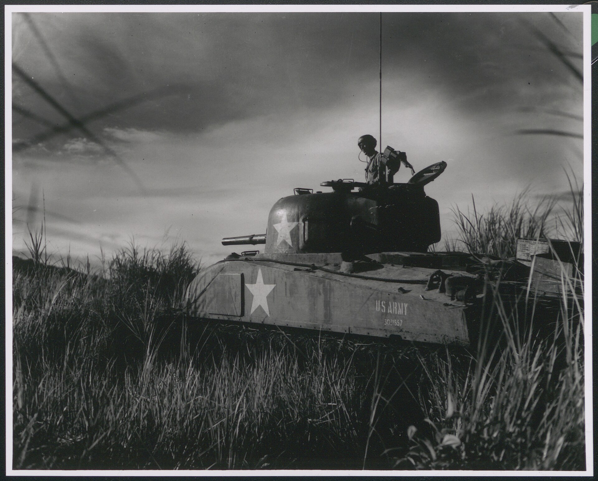
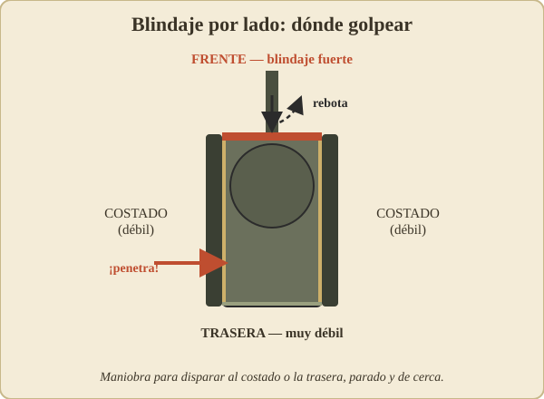
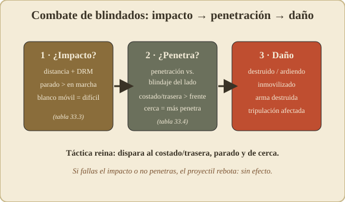
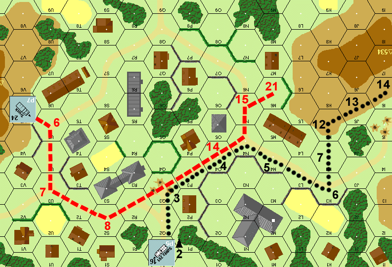
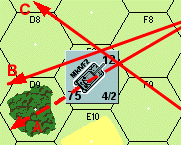
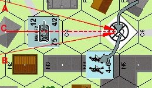
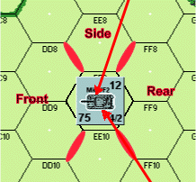
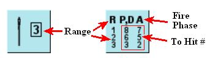

Blindados — VBC (reglas 28–43)¶

28. VEHÍCULOS BLINDADOS DE COMBATE (VBC)¶

A continuación se describen los tipos básicos de carros y Cañones Autopropulsados (en adelante denominados CAP) presentes en SQUAD LEADER. Los semiorugas y camiones, cuyas reglas varían considerablemente, se tratarán más adelante, antes de los escenarios en los que se introducen. Los carros, CAP y semiorugas se denominan colectivamente VBC (Vehículos Blindados de Combate). Los carros son vehículos con torreta y se reconocen por la banda blanca alrededor del VBC, símbolo de una torreta móvil. Los VBC impresos sobre fondo blanco son VBC "de techo abierto" y están sujetos al fuego de infantería desde arriba (46.54 y 47.8).
28.1 PUNTOS DE MOVIMIENTO: La capacidad de movimiento de los VBC varía enormemente de unos a otros y se expresa en Puntos de Movimiento (PM) impresos en la esquina superior derecha del marcador. Los VBC utilizan los Puntos de Movimiento exactamente de la misma manera que la infantería gasta los FM, pero lo hacen utilizando su propia Tabla de Costes de Movimiento de Vehículos (30.4).
28.2 TIPO DE CAÑÓN PRINCIPAL: El tamaño del armamento principal del VBC en milímetros, que determina la columna usada en las Tablas de Aniquilación de VBC y de Fuego de Infantería. Si hay una línea sobre este número, solo puede disparar munición HE. Todos los demás cañones pueden disparar munición AP o HE. Un asterisco (*) denota armamento principal menos eficaz para impactar objetivos a largo alcance. No hay limitación de alcance para el armamento principal de un carro o CAP.
28.3 TIPO DE VEHÍCULO: Se usa únicamente con fines de identificación.
28.4 ARMAMENTO MG: Algunos VBC tienen ametralladoras además de su armamento principal. Todas las MG de los VBC tienen un alcance normal de 8. El número de la izquierda se refiere a la potencia de fuego y los factores de penetración de la MG que solo puede disparar en el Arco Cubierto (29.4), y al mismo hex objetivo que el cañón principal. El número de la derecha se refiere a la potencia de fuego y los factores de penetración de la MG que puede disparar en cualquier dirección independientemente del Arco Cubierto.

Tipos de vehículo (fila superior): - Tank → Carro/Tanque - SP Gun → Cañón autopropulsado (CAP) - Open Top AFV → VBC de techo abierto
Diagrama inferior (etiquetas de la ficha de vehículo): - Main Gun Type → Tipo de cañón principal - Movement Points → Puntos de Movimiento (PM) - Covered Arc MG Factor → Factor de ametralladora del arco cubierto - 360° MG Factor → Factor de ametralladora de 360° - Vehicle Type → Tipo de vehículo - MG ARMAMENT → Armamento de ametralladora

Mapa con la etiqueta Covered Arc → Arco cubierto.

Mapa con la etiqueta Spines → Aristas/lomos (de los edificios).
30. Tabla de Coste de Movimiento de Vehículos¶
Verifica los valores con tus cartas/tablas originales.
* Requiere tirada de dados, ver 39.1 ** No se permiten semiorugas COT = Coste del Terreno en el que se mueve
| Terreno / Acción | Coste para VBC | Coste para Camión/Jeep |
|---|---|---|
| Desembarcar pasajeros | 2 PM | 2 PM |
| Por carretera (a través del lado de hex cruzado por la carretera) | ½ PM | ½ PM |
| Terreno abierto, trigal | 1 PM | 6 PM |
| A través de un hex que contiene restos/carcasa o un vehículo | 2 PM/vehículo + COT | 2 PM/vehículo + COT |
| A terreno más alto que el ocupado previamente | 4 PM + COT | 4 PM + COT |
| Bosque* | 6 PM ** | No permitido |
| Edificios de madera | 4 PM ** | No permitido |
| Sobre muros/setos | Sin coste adicional | No permitido |
| Hex lleno de humo | 1 PM + COT | 1 PM + COT |
| Cualquier hex fuera del Arco Cubierto (29.4) | 2 PM + COT | 2 PM + COT |
| Cráter de proyectil, atrincheramiento | Sin coste adicional | 4 PM + COT |
| Edificios de piedra, lados de hex de acantilado | No permitido | No permitido |
29. APILAMIENTO Y COLOCACIÓN DE VEHÍCULOS¶
29.1 Solo puede colocarse un vehículo de cualquier tipo en el mismo hex. Dos vehículos no pueden terminar su turno en el mismo hex, pero durante el turno cualquier número de vehículos puede pasar a través del mismo hex. Un vehículo que se mueve a través de un hex que contiene otro vehículo o carcasa paga una penalización de 2 PM por cada vehículo/carcasa en el hex, además del coste normal de entrar en ese hex.
►29.2 Solo tres unidades de infantería (de las cuales únicamente dos pueden ser escuadras) y hasta 5 puntos de porte de armas de apoyo pueden apilarse bajo un vehículo. Además, todos los vehículos pueden llevar pasajeros encima del vehículo (31.1, 51.1).
29.3 Las unidades de infantería amigas en el mismo hex que un vehículo deben estar o bien montadas en el vehículo como pasajeros (31.2) (apiladas encima del marcador del vehículo) o bien avanzando junto a él (apiladas debajo del marcador del vehículo).
29.4 Al colocar un vehículo es importante considerar la dirección en que está orientado, ya que esto define su Arco Cubierto, que se utiliza tanto en la resolución del movimiento como del fuego. El Arco Cubierto se forma alineando el cañón del CAP o del carro en línea directa con un saliente del lado de hex del hex que dispara. El Arco Cubierto consiste entonces en los lados de hex inmediatamente a derecha e izquierda del cañón. Estos lados de hex se extienden hasta el límite de la LDV desde el hex que dispara. Todos los hexes entre estas dos filas de hexes convergentes forman el Arco Cubierto. Si la colocación del VBC es ambigua, el oponente puede elegir cuál de los dos salientes equidistantes se usará para determinar el Arco Cubierto. En el caso de un vehículo cuyo cañón no sea claramente discernible o sea inexistente, se utiliza una flecha (>) impresa en el marcador para determinar el Arco Cubierto.
30. MOVIMIENTO DE VBC¶
30.1 Los marcadores de vehículos no pueden entrar en hexes de edificio de piedra bajo ninguna circunstancia.
30.2 Los vehículos pueden gastar hasta la totalidad de su asignación de Puntos de Movimiento cada turno, de acuerdo con el coste del terreno en el que se mueven, según se describe en la Tabla de Costes de Movimiento de Vehículos.
30.3 Los vehículos pueden moverse siempre un hex por turno, independientemente de los costes en PM de la Tabla de Costes de Movimiento de Vehículos.
30.4 Todo el movimiento de vehículos tiene lugar en la Fase de Movimiento. Ningún vehículo puede moverse en la Fase de Avance.
►30.5 Los vehículos pueden cambiar su orientación (y por tanto su Arco Cubierto) libremente tras moverse a un hex, pero deben moverse en la dirección de su Arco Cubierto, con el frente del vehículo orientado hacia el hex al que se mueven.
30.6 Los vehículos pueden moverse libremente a través de hexes que contengan unidades de infantería amigas.
►30.7 A diferencia de las unidades de infantería, los VBC pueden moverse a un hex ocupado por el enemigo durante su Fase de Movimiento (35.1). Sin embargo, deben pagar el doble del coste normal (4 PM/VBC + COT) para moverse a un hex ocupado por un VBC enemigo.
30.8 Un vehículo no puede terminar su movimiento en el mismo hex que otro vehículo, a menos que sea destruido o inmovilizado mientras se mueve a través del hex. Las combinaciones carcasa/vehículo no tienen más efecto sobre el bloqueo de LDV que un único vehículo. Un vehículo, mientras está en el mismo hex que una carcasa o vehículo, no recibe bloqueo de LDV de esa carcasa o vehículo.
Ejemplo: Los números negros en cada hex se refieren al número total de PM gastados por el semioruga para llegar allí. Los números rojos se refieren al número total de PM gastados por el camión.
31. TRANSPORTE DE INFANTERÍA / CARROS Y CAÑONES AUTOPROPULSADOS¶
►31.1 Todos los VBC pueden llevar una combinación máxima de dos unidades de infantería (de las cuales solo una puede ser una escuadra) más hasta 5 puntos de porte de Armas de Apoyo, sin reducción de los Puntos de Movimiento del VBC.
31.2 Las unidades transportadas se colocan encima del marcador del VBC. Las unidades colocadas debajo del marcador del VBC no están siendo transportadas, sino que van a pie.
31.3 El VBC no puede moverse durante el turno en que la infantería embarca en el vehículo, pero puede moverse tanto antes como después del desembarco en el turno en que la infantería desembarca. No obstante, el vehículo debe pagar una penalización de dos PM para permitir el desembarco de las unidades, a menos que las unidades que desembarcan estén desmoralizadas.
►31.4 La infantería puede embarcar en un vehículo sin penalizaciones de movimiento adicionales, pero solo puede moverse al mismo hex o a un hex adyacente no ocupado por el enemigo durante cualquier Fase de Movimiento en que desembarque. La infantería no puede embarcar ni desembarcar durante la Fase de Avance, ni viajar en ningún VBC que esté reduciendo a escombros un edificio de madera (58.4).
31.5 La infantería transportada en un carro o CAP no puede disparar mientras es transportada (aunque podría participar en combate cuerpo a cuerpo si es atacada por infantería contraria). Sin embargo, la infantería recién desembarcada podría disparar a media potencia en la Fase de Fuego de Avance.
31.6 La infantería transportada que se desmoraliza como resultado del fuego enemigo desmonta inmediatamente al mismo hex o a cualquier hex adyacente no ocupado por el enemigo (a elección del jugador propietario), donde se trata como cualquier otra unidad desmoralizada. Las unidades desmoralizadas no pueden embarcar en un vehículo.
►31.7 Si un carro o CAP dispara cualquier armamento, o es impactado por fuego de tipo distinto al de infantería pero no eliminado mientras transporta infantería, la infantería montada desmonta inmediatamente al mismo hex o a cualquier hex adyacente no ocupado por el enemigo. El vehículo sí tiene que pagar el coste de 2 PM por cualquier infantería que se vea forzada a desmontar.
31.8 Si un VBC es destruido, todos sus pasajeros son eliminados.
31.9 Los VBC pueden empezar o entrar en los escenarios con pasajeros ya montados, cuando corresponda.
32. LOS VBC COMO COBERTURA¶
32.1 [RE: véase GIA 144.96] Los ataques contra pasajeros sobre un carro o CAP reciben un modificador de +2 a la tirada si el fuego se dirigió contra ellos a través del Arco Cubierto (29.4) a la misma elevación o a una inferior. Si el fuego se dirige contra ellos desde el flanco, la retaguardia o una elevación superior, no hay tal modificación.
32.2 No hay modificador de -2 a la tirada por fuego defensivo contra pasajeros que se mueven a campo abierto. (EXCEPCIÓN: 46.54 FFE de Artillería).
32.3 [RE: véase GIA 144.2] La LDV de cualquier unidad que dispara y que cruza la silueta de un vehículo se ve afectada como si el vehículo fuera un muro de piedra en el segundo lado de hex del hex del vehículo a través del cual se traza el fuego (11.51). EXCEPCIÓN: Los vehículos nunca bloquean la LDV trazada desde un hex adyacente. Los vehículos que ocupen el hex situado detrás de una carcasa se considerarían "ocultos por desenfilada" (hull down) si la LDV del atacante cruza la silueta de la carcasa.
Ejemplo: El vehículo afecta a la LDV del atacante como si fuera un muro a lo largo del lado de hex rojo. Todo el fuego dirigido al hex S8 recibiría un modificador de +2 a la tirada (o se consideraría desenfilado/hull down, 41.1, en el caso de los VBC); todo el fuego dirigido al hex S9 quedaría bloqueado, salvo desde una elevación superior.
Ejemplo: Supón que el que dispara está al mismo nivel que el hex objetivo. El Fuego A obtiene un modificador de -2 a la tirada. El Fuego B queda igualado. El Fuego C queda bloqueado.
32.4 [RE: véase GIA 144.2] Los marcadores de vehículos deben colocarse en el centro exacto de cada hex, de modo que el Arco Cubierto quede definido y ninguna parte del marcador se extienda fuera del hex. El fuego que cruza el marcador del vehículo, pero no la silueta del vehículo en sí, no queda bloqueado.
Ejemplo: El Fuego A queda bloqueado; el Fuego B y el C no.
32.5 Las unidades situadas bajo el marcador de un VBC (es decir, a pie en el mismo hex) reciben un modificador de +1 a la tirada para todos los ataques realizados contra ellas. Si el VBC es eliminado, todas las unidades situadas bajo el marcador del VBC deben realizar un Chequeo de Moral normal. Por lo demás, la infantería situada bajo el marcador de un VBC no se ve afectada por los ataques antitanque. (EXCEPCIÓN: Lanzallamas y Cargas de Demolición).
32.51 Las unidades situadas bajo el marcador de un VBC pueden moverse con (19.4) el VBC hasta el límite de su asignación normal de movimiento, a fin de mantener durante toda la Fase de Fuego Defensivo el beneficio del modificador por efecto del terreno derivado de estar bajo el marcador del VBC, siempre que empiecen y terminen la Fase de Movimiento bajo el marcador del VBC.
32.52 El fuego defensivo contra infantería que se mueve a campo abierto bajo el marcador de un VBC estaría sujeto tanto al modificador de -2 por moverse a campo abierto como al modificador de +1 por estar bajo el marcador de un VBC, resultando así un modificador neto de -1.
►32.6 [RE: véase GIA 144.2] Los vehículos no presentan obstáculos a la LDV (32.3) durante la Fase de Fuego Defensivo si se han movido en la Fase de Movimiento precedente.
32.7 [RE: véase GIA 144.2] Las unidades que intentan moverse por detrás de una línea de vehículos contiguos, o de vehículos y obstrucciones de LDV, podrían aún ser objeto de fuego entre los vehículos durante la Fase de Fuego Defensivo, pero el vehículo constituiría cobertura suficiente para impedir que el que dispara obtenga el modificador de "-2" a la tirada por un objetivo que se mueve a campo abierto, si la LDV cruza el marcador del vehículo. Esto también se aplicaría a una secuencia edificio-carro-edificio. Véase el diagrama de abajo.
33. COMBATE DE VBC¶

33.1 [RE: ver GIA 144.411] Los VBC (carros y CAP), a diferencia de la infantería, solo pueden disparar su armamento principal hacia delante, en la dirección conocida como su Arco Cubierto (29.4).
33.2 Los VBC, como la infantería, solo pueden disparar su armamento principal una vez (EXCEPCIÓN: M-10) por turno de jugador, y si disparan cualquier arma en la Fase de Fuego Preparado no pueden moverse en la Fase de Movimiento. Cierto fuego puede ejecutarse en el mismo turno de jugador después del movimiento, con una penalización a la precisión del fuego (33.31).
►33.3 La resolución del combate de VBC es un proceso de dos pasos. Primero se debe consultar la TABLA PARA IMPACTAR para determinar si el armamento principal del carro o del CAP impactó en su objetivo. El "Tipo de Objetivo" y el "alcance al objetivo" se cruzan para determinar el Número de Impacto, que se debe igualar o sacar por debajo en la tirada para impactar en el objetivo. Las unidades rusas que disparan usan los Números de Impacto rojos; todas las demás unidades usan los Números de Impacto negros. Si no se consigue el Número de Impacto, se falla el objetivo y no hay segundo paso de resolución del combate.
►33.31 La tirada de dados de Determinación de Impacto puede modificarse por diversos tipos de arma y/o situaciones. Estos modificadores se aplican en cualquier fase relevante en la que dispare el VBC. Nótese que los CAP/Cañones Antitanque solo pueden disparar dentro de su Arco Cubierto en cualquier Fase de Fuego, pero pueden pivotar dentro del hex durante su Fase de Movimiento para disparar en la Fase de Fuego de Avance (Caso G), y de igual modo pueden cambiar de orientación durante la Fase de Fuego Defensivo (Caso I). Un CAP no puede disparar su armamento principal en el mismo turno de jugador en el que se mueve a un hex nuevo. Todos los VBC pueden disparar su armamento de MG a la mitad de potencia tras moverse a un hex nuevo.
33.32 Todos los Modificadores a la Tirada de Determinación de Impacto son acumulativos excepto los casos B y C tomados conjuntamente; y aquellas penalizaciones por pivotar y por movimiento a un hex nuevo, ya que moverse a un hex nuevo permite cambiar libremente el Arco Cubierto (30.5). Una tirada PARA IMPACTAR de '2' antes de la modificación da como resultado un posible impacto, incluso si el número final PARA IMPACTAR necesario es menor que 2. Tira un tercer dado, y suma +1 por cada número por debajo de 2 que originalmente se necesitaba para un impacto. Cualquier resultado menor que 6 es un impacto.
Ejemplo: Supongamos un número necesario PARA IMPACTAR de 0. Para conseguir un impacto, el tirador debe sacar una tirada de '2' y después sacar un '1', '2' o '3' en un tercer dado.
33.33 Los Líderes apilados con carros o CAP no modifican el fuego del carro o del CAP de ninguna manera.
33.34 Cuando un carro dispara fuera de su Arco Cubierto (Caso D), se cambia la orientación de la ficha que dispara de modo que el objetivo quede ahora dentro de su Arco Cubierto. Nota: no confundir este movimiento de la ficha con el Caso E, que se refiere a un carro que cambió de orientación dentro de su hex durante la Fase de Movimiento.
►33.4 Suponiendo que el VBC objetivo haya sido impactado, se debe consultar la tabla de DESTRUCCIÓN DE VBC para determinar si el proyectil penetró el blindaje del objetivo. Cruza el tipo de arma que dispara y la munición con la Orientación del Objetivo para determinar el Número de Destrucción del VBC. El Número de Destrucción es el número que debes igualar o sacar por debajo en la tirada para eliminar el vehículo.
33.41 Algunos VBC tienen mejor protección de blindaje que otros. Por tanto, es necesario aplicar Modificadores a la tirada de dados del atacante en la Tabla de Destrucción de VBC.
33.42 No hay modificador a la tirada de dados "Para Destruir" para camiones y jeeps.
33.5 La Orientación del Objetivo se determina como se muestra en el siguiente diagrama, dependiendo de qué lado de hex del objetivo cruce la LDV de la unidad que dispara. Si la LDV de la unidad que dispara recorre exactamente la línea central (espina) de un hex del objetivo que determina la orientación, la orientación del objetivo será la menos favorable para el atacante. En el ejemplo siguiente ambas orientaciones del objetivo serían "Lateral".
33.6 Las fichas de VBC cuyo Tipo de Cañón Principal aparece tachado solo pueden disparar munición HE. Todos los demás VBC pueden disparar HE o AP. Los 105 americanos también tienen la opción de disparar HEAT (63.3), lo cual se indica en la ficha con la abreviatura H6. El armamento principal de los VBC con un asterisco (*) es menos efectivo al impactar objetivos a largo alcance debido a baja velocidad de salida, o a un sistema rudimentario de puntería.
33.7 Un carro o CAP no puede usar sus factores de MG en un intento de destruir otro carro o CAP. Un semioruga podría usar su armamento de MG en la columna "MMG/HMG" de la Tabla de Destrucción de VBC contra cualquier VBC. El M16, con su armamento de cuádruple 50, podría tirar 4 veces en la columna del calibre 50 al disparar a un VBC, pero las 4 tiradas de dados deben hacerse contra el mismo objetivo, y cualquier tirada de dados de 12 inutilizaría las cuatro ametralladoras. Una MG que dispara a un vehículo no penetra más allá del vehículo.
33.8 Los VBC no pueden combinar su fuego con ningún otro VBC ni infantería, aunque estén adyacentes.
33.9 Siempre que un carro o CAP es destruido por acción hostil (EXCEPCIÓN: Combate Cuerpo a Cuerpo) existe la posibilidad de que la dotación escape viva y operativa. Por tanto, siempre que un carro o CAP sea eliminado, dale la vuelta y tira dos dados. Una tirada de dados igual o inferior al Número de Supervivencia impreso en la ficha de restos da como resultado la supervivencia de la dotación. Se coloca entonces inmediatamente una ficha de dotación encima de la ficha de restos. Se trata como "infantería moviéndose a campo abierto" y está sujeta al modificador a la tirada de dados de -2, sin importar la fase de fuego, durante el resto de esa fase de fuego. Si sobrevive al resto de la fase de fuego, se mueve inmediatamente debajo de los restos o a cualquier hex adyacente no ocupado por unidades enemigas.





Diagrama de orientación de un VBC (vehículo blindado de combate): muestra los arcos de blindaje del carro respecto a los hexes circundantes. - Side = Flanco (lateral) - Front = Frontal - Rear = Retaguardia (trasera) Etiquetas de hex de referencia: EE8, DD8, FF8, DD9, FF9, EE10, DD10, FF10, C10. Valores del carro: 12 (arriba), 75 (izquierda), 4/2 (abajo derecha).
Tabla Para Impactar 33.3¶
Verifica los valores con tus cartas/tablas originales.
(Cada celda muestra dos valores por rango: el primero/negro y el segundo/rojo. Conserva ambos según tu tabla original.)
| Tipo de blanco / Alcance | 1-6 | 7-12 | 13-24 | 25+ |
|---|---|---|---|---|
| Infantería en edificio, cráteres de proyectil, atrincheramientos | 8 / 8 | 7 / 6 | 6 / 5 | 5 / 2 |
| Infantería en bosque | 8 / 8 | 6 / 6 | 5 / 4 | 4 / 2 |
| Infantería en terreno abierto | 9 / 9 | 8 / 7 | 7 / 6 | 6 / 3 |
| Vehículo en hull down | 7 / 6 | 5 / 4 | 4 / 3 | 3 / 2 |
| Vehículo en bosque/edificio | 9 / 9 | 8 / 7 | 7 / 6 | 6 / 3 |
| Vehículo | 10 / 10 | 9 / 8 | 8 / 7 | 7 / 4 |
| Cañón antitanque (AT) | 6 / 5 | 5 / 4 | 4 / 3 | 2 / - |
Modificadores a la Tirada de Determinación de Impacto 33.31¶
| Caso | Descripción | Modificador |
|---|---|---|
| A | Disparo durante la Fase de Fuego Defensivo contra un blanco en movimiento | +2 |
| B | * cañón disparando contra blanco a más de 6 hexes de distancia | +2 |
| C | * cañón disparando contra blanco a más de 12 hexes de distancia | +4 |
| D | Carro disparando fuera del Arco Cubierto | +2 |
| E | Carro disparando durante el Fuego de Avance tras pivotar dentro del hex durante la Fase de Movimiento | +1 |
| F | Carro disparando durante el Fuego de Avance tras moverse a un nuevo hex | +5 |
| G | Cañón CAP/AT/obús disparando durante el Fuego de Avance tras pivotar dentro del hex durante la Fase de Movimiento | +3 |
| H | El blanco está oculto | +2 |
| I | Cañón CAP/AT/obús disparando durante la Fase de Fuego Defensivo tras pivotar dentro del hex durante la misma Fase de Fuego Defensivo | +3 |
| J | El blanco está en un hex adyacente | -2 |
| K | El blanco está en el mismo hex | -2 |
*Solo se aplica al armamento principal de los VBC que disparan, marcado con un asterisco en el contador.
Modificadores al Número de Destrucción de VBC 33.41¶
| Vehículo | MTD |
|---|---|
| Semiorugas | -5 |
| Priest | -2 |
| M-10 | -1 |
| M4A4, T34, MkIV | 0 |
| M4M52, SU122, STG III | +1 |
| SU152, Brumbar | +2 |
Tabla de Destrucción de VBC 33.4¶
Verifica los valores con tus cartas/tablas originales.
(Bajo cada tipo de munición, los números son valores por calibre/tipo. Conserva las columnas EXACTAS de tu tabla original.)
| Blanco | AP MMG/HMG | AP 50cal/20mm | AP 37 | AP 50 | AP 75/76 | HE 37 | HE 50 | HE 75/76 | HE 105 | HE 120 | HE 150 | H6 | PF | BAZ | FT | DC |
|---|---|---|---|---|---|---|---|---|---|---|---|---|---|---|---|---|
| Frontal VBC | -3 | -3 | 2 | 3 | 6 | -1 | 0 | 2 | 4 | 6 | 8 | 8 | 7 | 3 | 3 | 9 |
| Lateral VBC | -3 | -2 | 3 | 6 | 9 | 2 | 4 | 6 | 7 | 8 | 10 | 10 | 8 | 4 | 5 | 10 |
| Trasera VBC | -2 | -1 | 8 | 8 | 10 | 2 | 3 | 8 | 4 | 8 | 9 | 12 | 11 | 4 | 6 | 11 |
| Camión/Jeep | NA | NA | NA | 8 | 10 | 11 | 12 | 12 | 12 | 12 | 12 | NA | NA | 10 | 10 | 12 |
NA - Ver 51.4 (Usar la TFI en su lugar)
Leyenda de códigos: - AP = perforante; HE = alto explosivo - MMG/HMG = ametralladora media/pesada; 50cal/20mm = calibre 50/20mm - H6 = obús (?); PF = Panzerfaust (?); BAZ = bazooka; FT = lanzallamas; DC = carga de demolición - MTD = Modificador a la Tirada de dados - CAP = cañón autopropulsado; AT = antitanque
34. VBC CONTRA INFANTERÍA¶
34.1 Los CAP y los carros pueden usar tanto sus MG como su armamento principal contra infantería.
34.2 El armamento principal debe primero conseguir un "impacto" contra la infantería en la TABLA PARA IMPACTAR utilizando cualquier modificador a la tirada de dados descrito en 33.31. Si se consigue un impacto, el calibre del arma (redondeado hacia abajo) del VBC que dispara se encuentra en pequeños números rojos junto a los factores de Potencia de Fuego en la Tabla de Fuego de Infantería. Esta cantidad de Potencia de Fuego de infantería es el equivalente del impacto producido por el armamento principal. Tira dos dados en la Tabla de Fuego de Infantería, añadiendo cualquier modificador de dados debido al terreno o la situación.
34.3 Tras resolver los efectos del fuego del armamento principal, el VBC puede tirar de nuevo en la Tabla de Fuego de Infantería utilizando su factor de ataque de MG. De este modo, es posible que un VBC desmoralice a una unidad de infantería con su armamento principal, y la desmoralice de nuevo con el fuego de MG, eliminándola así.
34.4 Incluso si el armamento principal falla, aún se puede llevar a cabo un ataque solo con los factores de Potencia de Fuego de MG del VBC.
Ejemplo: Supongamos que un T-34 con un cañón de 76 mm dispara a una escuadra en un edificio de piedra a un alcance de 8 hexes. Se necesita un "6" o menos para conseguir un impacto con el armamento principal, y se saca. Este impacto equivale a 8 factores de potencia de fuego en la Tabla de Fuego de Infantería. La tirada de dados es un "5", que se ajusta a un "8" debido a la protección del edificio de piedra, resultando en un Chequeo de Moral. Independientemente del efecto del Chequeo de Moral, el carro puede disparar de nuevo usando su factor de MG de 4 en la Tabla de Fuego de Infantería.
►34.5 [RE: véase GIA 145.6] Si el VBC dispara a un objetivo oculto, se considera fuego de ÁREA y debe reducirse a la mitad. En este caso, un impacto de un proyectil de "70 mm" normalmente equivalente a 8 factores de fuego de infantería equivaldría a 4 en su lugar. De igual modo, un carro que usa Fuego a Quemarropa tendría su equivalente de potencia de fuego de infantería duplicado. Un carro que haya conseguido un impacto en la Fase de Fuego de Avance tras moverse en la Fase de Movimiento no reduciría a la mitad el efecto de su armamento principal. Pagó su penalización por movimiento con la modificación de +5 en la TABLA PARA IMPACTAR (33.31, Caso F).
34.6 [RE: véase GIA 145.1] Nótese que un VBC que dispara su armamento principal contra infantería en movimiento a campo abierto durante la Fase de Fuego Defensivo debe sumar 2 a su tirada de dados PARA IMPACTAR debido al objetivo en movimiento (33.31, Caso A). Sin embargo, si impacta, podría restar 2 a la posterior tirada de dados de "efecto" en la Tabla de Fuego de Infantería. Las MG de los VBC siempre restan 2 al disparar a infantería en movimiento a campo abierto, del mismo modo que cualquier otro fuego de MG o de infantería.
34.7 El factor de potencia de fuego de la MG del Arco Cubierto (número de la izquierda) de un VBC se reduce a la mitad como Fuego en Movimiento si el VBC se ha movido a un hex nuevo o ha pivotado (cambiado su Arco Cubierto) dentro de un hex durante ese turno de jugador. El factor de potencia de fuego de la MG de 360° (número de la derecha) se reduce a la mitad solo si el VBC se ha movido a un hex nuevo durante ese turno de jugador. Los factores de potencia de fuego de la MG del Arco Cubierto y de la MG de 360° de un VBC pueden usarse para atacar al mismo o a diferente hex objetivo. Si atacan al mismo hex objetivo deben combinarse y resolverse con una sola tirada de dados. Sin embargo, si el armamento principal disparó, el factor de la MG del Arco Cubierto solo puede usarse contra el mismo hex objetivo sobre el que disparó el armamento principal.
►34.8 [RE: 64.44 COI] El factor de MG de 360° representa más que un campo de tiro de 360°. Es también un cálculo abstracto de la exposición que corren los miembros de la dotación del VBC al manejar armamento externo. Los VBC que usan su factor de MG de 360° son vulnerables al fuego enemigo en la fase de fuego enemiga inmediatamente posterior. Indica su vulnerabilidad colocando una ficha de CE (Crew Exposed / Dotación Expuesta) encima del VBC. El fuego de infantería puede dirigirse entonces contra el VBC con CE sin importar la fase de fuego, y no necesita estar adyacente para ser efectivo (36.1). Todo ese fuego recibe un modificador de +2 debido a la naturaleza similar a un muro del VBC. El modificador de -2 por moverse a campo abierto no se aplica. Los resultados de Chequeo de Moral se ignoran. Si resulta un KIA, obliga a la dotación del VBC a someterse a un Chequeo de Moral inmediato. El fallo del Chequeo de Moral resulta en el abandono y consiguiente destrucción del VBC. Retira la ficha de CE al final de la siguiente fase de fuego enemiga.
►34.9 [RE: 148.4 GIA] METRALLA (CANISTER): el alemán MKIVF1 puede disparar Metralla (C7) en lugar de munición HE. La Metralla es efectiva solo contra infantería, camiones y jeeps. La Metralla tiene un alcance de 3 hexes pero no tiene efecto a largo alcance más allá de esos 3 hexes ni ningún efecto de duplicación a Quemarropa. La Metralla tiene un factor de penetración de 3 y un equivalente de potencia de fuego de infantería de 20. El fuego de Metralla debe resolverse con tirada en la TABLA PARA IMPACTAR, pero por lo demás se trata como fuego de MG.
34.91 El jugador alemán debe especificar si va a disparar Metralla antes de tirar los dados "Para Impactar".
34.92 Una tirada de dados "PARA IMPACTAR" de Metralla de 7 o más resulta en que ese cañón no tiene proyectiles de Metralla durante el resto del escenario. Trata ese y todos los proyectiles subsiguientes como HE.
35. ARROLLAMIENTOS¶
►35.1 A diferencia de la infantería, los VBC pueden ejecutar una forma de ataque durante la Fase de Movimiento moviéndose encima o a través de unidades de infantería enemigas y/o camiones/jeeps en cualquier tipo de terreno. Este tipo de ataque se denomina ARROLLAMIENTO y se resuelve en la Tabla de Fuego de Infantería inmediatamente cuando el VBC entra en el hex. Los VBC no pueden Arrollar a otros VBC.
35.2 Cualquier número de VBC puede Arrollar un hex objetivo, pero cada ataque de Arrollamiento debe ejecutarse por separado.
35.3 Un carro o CAP que ejecuta un Arrollamiento ataca con el equivalente de 16 factores de potencia de fuego en la Tabla de Fuego de Infantería. Los Semiorugas Armados (47) pueden arrollar con 8 factores de potencia de fuego. Si un VBC pierde su armamento principal o su potencia de fuego de MG debido a una avería (38.1), su factor de potencia de fuego de arrollamiento se reduce a la mitad. Si pierde todo su armamento debido a avería, no puede atacar, pero aún puede moverse encima o a través de posiciones enemigas. Los Arrollamientos contra camiones o jeeps se modifican con -5 a la tirada de dados.
35.4 Todos los Modificadores a la Tirada de Dados por Efectos del Terreno (11.1) normalmente asociados con la Tabla de Fuego de Infantería se aplicarían, con la excepción del modificador de -2 por infantería moviéndose a campo abierto, que se usa solo durante la Fase de Fuego Defensivo.
35.5 Los carros y CAP que ejecutan Arrollamientos no pueden llevar pasajeros al hex objetivo.
35.6 El VBC que arrolla debe sobrevivir a todo el fuego defensivo de cualquier fuente antes de entrar en el hex objetivo para poder ejecutar el ataque de Arrollamiento. La(s) unidad(es) arrolladas serían inmunes al fuego defensivo Antitanque mientras estén en el mismo hex que el VBC que arrolla. Todos los VBC de techo abierto y aquellos sin factor de MG de Arco Cubierto que ejecutan un Arrollamiento y desean usar potencia de fuego de MG (35.3) en el Arrollamiento se consideran en estado de CE en el hex inmediatamente anterior al hex de Arrollamiento y durante toda esa Fase de Movimiento (y de Fuego Defensivo).
35.7 Si el hex objetivo es terreno abierto, la infantería en el Hex Objetivo no puede ejecutar fuego defensivo contra el vehículo que arrolla a menos que esté armada con armas Antitanque. Cualquier infantería adyacente en terreno que no sea abierto puede hacer fuego defensivo contra el vehículo que arrolla (36.1).
35.8 Los vehículos que ejecutan un ataque de Arrollamiento no sufren penalizaciones de movimiento adicionales, pero solo pueden ejecutar un ataque de Arrollamiento por turno. Un ataque de Arrollamiento debe ejecutarse contra el primer hex ocupado por el enemigo en el que se entra durante la Fase de Movimiento. Cualquier otra unidad enemiga sobre la que se pase durante el turno se considera que ha encontrado cobertura dentro de su hex y se ignora. Si el VBC termina su Fase de Movimiento en el mismo hex que una unidad de tipo infantería enemiga, esa(s) unidad(es) de infantería y sus armas de apoyo se mueven a un hex adyacente de su elección inmediatamente después de la Fase de Fuego Defensivo actual. Cualquier Cañón AT, mortero o 105 en el hex de Arrollamiento es eliminado. Otras armas de apoyo de infantería en el hex de Arrollamiento se eliminan solo si resulta un KIA [RE: véase GIA 143.7]. Si el movimiento a un hex adyacente no es posible debido a la presencia de unidades enemigas, límites de apilamiento, el borde del tablero o lados de hex con acantilado, la(s) unidad(es) es eliminada.
35.9 Los VBC que arrollan no pueden disparar ningún arma durante el turno de jugador en el que ejecutan un ataque de Arrollamiento.
36. INFANTERÍA CONTRA VBC¶
Suponiendo que la infantería solo tenga sus armas ligeras inherentes y ninguna arma de apoyo antitanque especial, puede atacar carros o CAP en la Fase de Fuego Defensivo o en la Fase de Combate Cuerpo a Cuerpo usando los procedimientos descritos a continuación.
►36.1 MÉTODO DE LA FASE DE FUEGO DEFENSIVO: los VBC pueden ser atacados durante la FASE DE FUEGO DEFENSIVO por escuadras de infantería que ocupen hexes de terreno no abierto a los que el vehículo estuvo adyacente durante la Fase de Movimiento.
►36.11 Todos los líderes y escuadras adyacentes al VBC que deseen atacarlo deben pasar primero un Chequeo de Moral "PRE-ATAQUE A VBC". A diferencia de otros Chequeos de Moral, no hay penalización por no superar el Chequeo de Moral Pre-Ataque a VBC. Las unidades que fallan este Chequeo de Moral aún pueden disparar a otros objetivos (incluyendo pasajeros sobre el carro) sin perjuicio adicional. Cualquier líder en el mismo hex que no falle el Chequeo de Moral Pre-Ataque a VBC puede aplicar su factor de liderazgo a otras unidades que realicen el Chequeo de Moral Pre-Ataque a VBC.
►36.12 Las unidades que pasan el Chequeo de Moral Pre-Ataque a VBC pueden intentar inmovilizar el VBC sacando una tirada igual o inferior al Número de Inmovilización del VBC en la Tabla de Números de Inmovilización de VBC de Fuego Defensivo. (Véase 39 para los efectos de la inmovilización.) Los Chequeos de Moral Pre-Ataque a VBC son siempre chequeos "M" normales.
36.13 [véase GIA 144.75] Incluso si el intento de inmovilizar el VBC falla, el atacante puede utilizar la misma tirada de dados en la Tabla de Fuego de Infantería para determinar el efecto sobre cualesquiera pasajeros vulnerables (no la infantería bajo la ficha de VBC) sobre el VBC atacado. Los ataques contra pasajeros están sujetos a las restricciones habituales del fuego de infantería.
36.2 MÉTODO DE LA FASE DE COMBATE CUERPO A CUERPO: los VBC también pueden ser atacados durante la FASE DE COMBATE CUERPO A CUERPO por infantería enemiga que se mueva sobre el VBC durante la Fase de Avance.
►36.21 Para avanzar al hex de Combate Cuerpo a Cuerpo, la infantería atacante debe pasar un "CHEQUEO DE MORAL PRE-ATAQUE A VBC" como se explica en 36.11.
►36.22 Si hay infantería enemiga en el mismo hex (incluso como pasajeros) con el VBC, la infantería atacante debe ignorar el VBC y entablar Combate Cuerpo a Cuerpo contra la infantería enemiga. El resultado de este Combate Cuerpo a Cuerpo no influye en la capacidad del VBC de moverse o disparar en su turno. Incluso si el VBC se aleja, la infantería de ambos bandos permanece en el hex de Combate Cuerpo a Cuerpo.
36.23 Las unidades que pasan el CHEQUEO DE MORAL PRE-ATAQUE A VBC y que se movieron sobre el VBC durante la Fase de Avance pueden atacar el VBC y eliminarlo con cualquier tirada de dados igual o inferior al factor de potencia de fuego de la escuadra. Si el intento lo realiza una ficha de líder en lugar de una escuadra, la tirada de dados necesaria para destruir el VBC es un 2 (tras la modificación por liderazgo).
►36.24 Si el ataque no tiene éxito, todas las unidades atacantes (a menos que estén entabladas en Combate Cuerpo a Cuerpo con infantería enemiga) regresan inmediatamente al hex desde el que avanzaron durante la Fase de Avance.
36.3 En ambos tipos de ataque (Fuego Defensivo o Combate Cuerpo a Cuerpo), cada escuadra atacante debe atacar por separado, incluso si está situada en el mismo hex con otras unidades atacantes.
36.4 Los líderes pueden aplicar sus modificadores a la tirada de dados de liderazgo en ambos tipos de ataque, pero cada líder puede dirigir solo un ataque (incluido el suyo propio si elige usarlo) sin importar el número de unidades atacantes en el mismo hex.
37. ARMAS ESPECIALES DE INFANTERÍA CONTRA VBC¶
37.1 La infantería armada con armas antitanque especiales no necesita realizar un Chequeo de Moral Previo al Ataque a VBC para atacar a un VBC.
37.2 LANZALLAMAS: Los lanzallamas pueden atacar a los VBC en cualquier fase de fuego e impactan automáticamente a cualquier vehículo dentro de su alcance. Tiran en la Tabla de Eliminación de VBC utilizando la columna de Lanzallamas (Flamethrowers). Independientemente de la tirada del ataque de lanzallamas contra el VBC, el jugador atacante puede usar la misma tirada una segunda vez en la columna de 20 factores de potencia de fuego de la Tabla de Fuego de Infantería para determinar el efecto del fuego sobre cualquier infantería que también esté en el hex objetivo.
37.3 PANZERFAUST: Cada ficha de panzerfaust representa un dispositivo antitanque que se retira tras su uso, independientemente del grado de éxito.
►37.31 Un panzerfaust tiene un alcance máximo de 3 hexes con Números para impactar variables según el alcance y según si la unidad disparadora se movió ese turno. Los modificadores a la tirada por terreno impuestos al disparar contra un VBC tras un lado de hex de muro (+2 hull down) se suman a la tirada para impactar, no a la tirada de la TABLA DE ELIMINACIÓN DE VBC. En el reverso de la ficha se reproduce una versión abreviada de la Tabla para impactar del PANZERFAUST.
37.32 Si se logra un impacto, consulta la columna de panzerfaust de la TABLA DE ELIMINACIÓN DE VBC para determinar el número que debe igualarse o sacarse por debajo para eliminar el vehículo.
37.33 Un líder puede disparar un panzerfaust a pleno efecto siempre que no opere ni dirija ninguna otra forma de fuego (EXCEPCIÓN: Combate Cuerpo a Cuerpo) durante ese turno de jugador.
37.34 Los modificadores de liderazgo se aplican a la TABLA PARA IMPACTAR del Panzerfaust, pero no a las Tablas de ELIMINACIÓN DE VBC en los ataques con panzerfaust.
37.35 Un panzerfaust cuenta como 1/2 LMG a efectos de apilamiento, movimiento y uso de la potencia de fuego de la escuadra. Por tanto, si los tuviera, una escuadra podría transportar hasta 6 panzerfaust sin coste y disparar hasta cuatro y aun así poder usar su propia potencia de fuego de infantería inherente. En ninguna circunstancia podría disparar más de cuatro panzerfaust en un turno de jugador.
37.36 Un panzerfaust es ineficaz contra la infantería, salvo que el objetivo de infantería esté en un edificio de madera. El panzerfaust, si impacta, tendría el efecto de anular el habitual modificador a la tirada de +2 por la protección del edificio de madera, para cualquier otro fuego contra ese hex durante esa fase de fuego específica, pero el panzerfaust en sí no tiene efecto directo sobre la infantería.
37.37 Un panzerfaust no puede dispararse desde el interior de un vehículo o búnker (56).
37.4 BAZOOKA: La bazooka puede usarse una y otra vez mientras tenga munición (37.45).
►37.41 Una bazooka tiene un alcance máximo de 4 hexes con Números para impactar variables según el alcance y según si la unidad disparadora se movió ese turno. Los modificadores a la tirada por terreno impuestos al disparar contra un VBC tras un lado de hex de muro (+2 hull down) se suman a la tirada para impactar, no a la tirada de las TABLAS DE ELIMINACIÓN DE VBC. En el reverso de la ficha se reproduce una versión abreviada de la Tabla para impactar de la Bazooka.
37.42 Si se logra un impacto, consulta la columna de Bazooka de la TABLA DE ELIMINACIÓN DE VBC para determinar el número que debe igualarse o sacarse por debajo para eliminar el vehículo.
37.43 Dos líderes cualesquiera pueden disparar una bazooka a pleno efecto siempre que ninguno opere ni dirija ninguna otra forma de fuego salvo Combate Cuerpo a Cuerpo durante ese turno de jugador. No obstante, solo puede afectar al disparo un modificador de liderazgo.
37.44 Los modificadores de liderazgo se aplican a la TABLA PARA IMPACTAR, pero no a las TABLAS DE ELIMINACIÓN DE VBC en los ataques con bazooka.
37.45 Si al disparar la bazooka se saca un "11" o "12" sin modificar en la tirada para impactar, la bazooka se queda sin munición o sufre una avería y se retira del juego tras resolver el ataque en curso.
37.46 Una bazooka equivale a una LMG a efectos de apilamiento, movimiento y uso de la potencia de fuego de la escuadra. Ninguna escuadra puede disparar más de 2 bazookas por turno de jugador. Una escuadra puede disparar dos bazookas y aun así poder disparar su propia potencia de fuego de infantería inherente.
37.47 Una bazooka también puede disparar munición HE para usar contra objetivos de infantería. Al disparar contra infantería, usa la TABLA PARA IMPACTAR de la Bazooka (37.41) y, si se logra un impacto, tira para determinar la eficacia en la columna de 6 de la Tabla de Fuego de Infantería, añadiendo todos los modificadores necesarios por terreno y situación. Los ataques con bazooka deben realizarse por separado; es decir, el factor de potencia de fuego de la bazooka no puede sumarse a otros factores de potencia de fuego para usarse en un único ataque combinado.
37.48♦ Una bazooka no puede dispararse desde el interior de un vehículo o búnker [♦EXC: contrapresión (backblast), véase GIA 146.1—.23].
36.12 Chequeo de Moral antes del ataque de VBC¶
Verifica los valores con tus cartas/tablas originales.
| Ubicación de las unidades que disparan | Tirada de dados requerida |
|---|---|
| Solo unidad de líder, en cualquier hex de terreno no despejado | 2 |
| Escuadra en trigal | 2 |
| Escuadra en edificio pequeño, cráter de proyectil, atrincheramiento | 3 |
| Escuadra en bosque o edificio grande (3 hexes) | 4 |

Detalle de una ficha de cañón/arma indicando dónde se leen sus valores. - Range = Alcance (recuadro con el valor «3») - R P,D A = encabezados de columnas de la tabla Para Impactar de la ficha (R = Alcance; P = ?; D = ?; A = ?) - Fire Phase = Fase de Fuego - To Hit # = Número Para Impactar Valores de la matriz por filas (1/2/3): | R | P | D | A | |---|---|---|---| | 1 | 8 | 6 | 7 | | 2 | 6 | 5 | 5 | | 3 | 3 | 5 | 2 | Verifica los valores con tus cartas/tablas originales.
37.31 Tabla para impactar del Panzerfaust¶
Verifica los valores con tus cartas/tablas originales.
| Alcance de disparo | Fuego preparado o defensivo | Fuego de avance tras movimiento |
|---|---|---|
| 1 hex | 8 | 7 |
| 2 hexes | 6 | 5 |
| 3 hexes | 3 | 2 |

Detalle de una ficha de cañón mostrando sus valores y la matriz Para Impactar. - Infantry Firepower Equivalent (IFE) = Equivalente de Potencia de Fuego de Infantería (valor «6») - Range = Alcance (valor «4») - Breakdown # = Número de avería (valor «X11+») - R P,D A = encabezados de la tabla Para Impactar de la ficha (R = Alcance; P = ?; D = ?; A = ?) - Fire Phase = Fase de Fuego - To Hit # = Número Para Impactar Valores de la matriz por filas (1/2/3/4): | R | P | D | A | |---|---|---|---| | 1 | 8 | 7 | 6 | | 2 | 7 | 6 | 4 | | 3 | 6 | 3 | 2 | | 4 | — | — | — | Verifica los valores con tus cartas/tablas originales.
37.41 Tabla para impactar de la Bazooka¶
Verifica los valores con tus cartas/tablas originales.
| Alcance | Fuego preparado o defensivo | Fuego de avance tras movimiento |
|---|---|---|
| 1 hex | 8 | 7 |
| 2 hexes | 7 | 6 |
| 3 hexes | 6 | 4 |
| 4 hexes | 3 | 2 |
38. FORTUNA CONTRA BLINDADOS¶
38.1 Siempre que un VBC, sea cual sea su nacionalidad, dispara su armamento principal, existe la posibilidad de que sufra una avería o se quede sin munición. Cada vez que se saque un "12" (antes de los ajustes por modificadores) en una tirada para impactar, ese cañón ha sufrido una avería y se marca colocando una ficha de AVERÍA (MALFUNCTION) sobre el VBC. La tirada para impactar en la que se sacó el "12" se resuelve, pero no puede intentarse ningún disparo posterior con el armamento principal hasta que se "repare". Para "reparar" el cañón, tiras un dado al comienzo de cada Fase de Reorganización hasta que se repare o quede eliminado. Una tirada de "1" devuelve el cañón al estado operativo. Una tirada de 6 indica que la avería no puede corregirse durante el resto de la partida. Tras sacar un "6" en un intento de reparación, dale la vuelta a la ficha de avería para mostrar su estado de INUTILIZADO (DISABLED). El VBC puede seguir moviéndose y disparando su MG con normalidad.
38.2 Las MG de los VBC pueden sufrir averías de la misma manera que lo anterior, con una tirada de "12" en la Tabla de Fuego de Infantería. El estado de avería/inutilizado se aplica a todo el armamento de MG del VBC, tanto el de Arco Cubierto (Covered Arc) como el de 360˚.
38.3 Si, mientras ejecuta un ataque de Arrollamiento, un VBC saca un "12" (antes de los ajustes por modificadores), se asume que la infantería ha colocado con suerte un haz de granadas y le ha roto las cadenas al vehículo. El VBC queda entonces inmovilizado durante el resto del escenario. (Véase 39 para más efectos de la inmovilización.)
39. INMOVILIZACIÓN¶
39.1 Los VBC están sujetos a averías tras entrar en un hex de bosque o de edificio de madera. Cada VBC que entre en tal hex debe tirar un dado para una posible avería. Una tirada de "6" avería a un VBC americano o ruso, mientras que un "5" o un "6" avería a un VBC alemán. Un carro "averiado" (Broken) se considera inmovilizado y se le coloca una ficha de inmovilizado.
►39.2 Siempre que un VBC quede inmovilizado, su dotación debe someterse a un Chequeo de Moral. Si lo supera, puede permanecer en el VBC y servir sus armas. Si lo falla, la dotación no se desmoraliza, pero abandona el vehículo. El VBC se convierte entonces en una carcasa y se coloca inmediatamente una ficha de dotación sobre la carcasa. Se trata como "infantería en movimiento al descubierto" y queda sujeta al modificador a la tirada de -2 durante el resto de la fase de fuego. Si sobrevive al resto de la fase de fuego, se mueve inmediatamente bajo la carcasa o a cualquier hex adyacente no ocupado por unidades enemigas.
39.3 Siempre que un VBC ya inmovilizado sea impactado pero no destruido por un arma antitanque, su dotación también debe realizar el Chequeo de Moral descrito anteriormente.
39.4 Los VBC inmovilizados no pueden pivotar dentro de un hex, pero los VBC con torreta pueden disparar su armamento principal y su MG coaxial fuera de su Arco Cubierto (caso A). Incluso tras disparar en tal caso, el vehículo inmovilizado no cambia su "Arco Cubierto".
40. CARCASAS¶
40.1 Siempre que cualquier vehículo haya sido destruido, dale la vuelta para sustituirlo por una ficha de carcasa.
40.2 Las carcasas no impiden el movimiento de las fichas no vehiculares y no cuentan para los límites de apilamiento de vehículos.
40.3 Los vehículos operativos pueden terminar su Fase de Movimiento en el mismo hex que una carcasa, pero no reciben ninguna obstrucción de LDV ni protección de la carcasa. Los vehículos pueden moverse a hexes con carcasa con un coste de movimiento adicional de 2 PM por carcasa. Además, una carcasa o vehículo en un hex de carretera anula esa carretera para otros vehículos, obligándolos a pagar el coste en PM del otro terreno de ese hex (normalmente terreno abierto).
40.4 Una carcasa puede retirarse durante la siguiente Fase de Reorganización por un carro o CAP operativo que comience su turno en un hex adyacente y que ni se mueva ni dispare durante ese turno de jugador. El VBC que empuja debe entonces terminar su turno siguiente en el hex previamente ocupado por la(s) carcasa(s).
40.5 Una carcasa ofrece "cobertura" a la infantería de la misma manera que un VBC operativo (32). Cualquier contorno de "humo" en la ficha de carcasa tendría el mismo efecto que el propio contorno del vehículo.
40.6 Otros VBC también pueden cubrirse tras una carcasa. Siempre que un arma antitanque dispare a través de una carcasa contra un vehículo en un hex adyacente, el objetivo se considera "Hull Down" (41.1).
Ejemplo 1: El Fuego A, que cruza la carcasa, se modifica sumando +2 a la tirada. Los Fuegos B y C no cruzan la carcasa y, por tanto, no se modifican.
Ejemplo 2: El STGIII está Hull Down frente al Fuego A, que cruza la ficha de carcasa. El Fuego B no cruza la ficha de carcasa y, por tanto, el objetivo no se considera "Hull Down" frente a su ataque.

Fichas de Chequeo de Moral. - Morale Check = Chequeo de Moral (ficha con «MC» y la palabra «Immobilize» / Inmovilizar) - Morale Check Numbers by nationality = Números de Chequeo de Moral por nacionalidad (ejemplo: símbolo con «6» y emblema soviético con estrella roja con «7»)

Diagrama de ejemplo de líneas de visión (LDV) marcadas A, B y C trazadas desde una unidad (2-4-7) en el hex D8 hacia los restos de un vehículo («Wreck») en el hex próximo, con una unidad «S6» adyacente. Etiquetas de hex de referencia: D5, C6, E6, C7, E7, C8, E8, D8.

Diagrama de ejemplo con líneas de visión (LDV) marcadas A y B. Muestra un carro con marcador «STUN» (aturdido) y valores 12 / 105 / 6/– en el hex L4, y los restos de un vehículo («Wreck» con ficha «S6») en el hex M4/N4. Etiquetas de hex de referencia: K3, M3, N3, K4, N4, K5, M5, N5.

Ejemplo de LDV con elevaciones. En el dibujo, los hexes están a distintos niveles (colina de nivel 1 y 2) y el hex 3 contiene bosque. La tabla indica a qué hexes tiene LDV despejada cada hex, tal como se muestra y también si se quitara el bosque del hex 3.
| Hex | LDV despejada a los hexes (según el dibujo) | LDV despejada (sin bosque en el hex 3) |
|---|---|---|
| 1 | 2 | 2 |
| 2 | 1, 3 | 1, 3, 4, 5, 6, 7, 8, 12 |
| 3 | 2, 4, 8 | 2, 4, 8 |
| 4 | 3, 5, 6, 7, 8 | 2, 3, 5, 6, 7, 8 |
| 5 | 4, 6, 8 | 2, 4, 6, 8 |
| 6 | 4, 5, 7, 8 | 2, 4, 5, 7, 8 |
| 7 | 4, 6, 8 | 2, 4, 6, 8 |
| 8 | 3, 4, 5, 6, 7, 9 | 2, 3, 4, 5, 6, 7, 9 |
| 9 | 8, 10, 11, 12 | 8, 10, 11, 12 |
| 10 | 9, 11, 12 | 9, 11, 12 |
| 11 | 9, 10, 12 | 9, 10, 12 |
| 12 | 9, 10, 11, 13 | 2, 9, 10, 11, 13 |
| 13 | 12 | 12 |
Verifica los valores con tus cartas/tablas originales.
41. INFORMACIÓN DIVERSA SOBRE BLINDADOS¶
41.1 "Hull Down" se utiliza en el cálculo del número "para impactar" y se refiere a una situación en la que la mitad inferior de un VBC está bloqueada por el terreno o una obstrucción. Un VBC se considera "hull down" si está directamente tras un muro (no un seto) o una carcasa, incluso si se le dispara desde arriba.
41.2 Las dotaciones de VBC pueden combatir y operar como una escuadra de infantería normal (factor de potencia de fuego de 2). Tales dotaciones pueden servir cualquier cañón antitanque (incluso si está capturado) o una MG a plena eficacia. A diferencia de otras escuadras, las escuadras de dotación no pueden usar su propia valoración de potencia de fuego mientras sirven un arma de apoyo.
►41.3 Un carro o CAP puede disparar humo en lugar de su armamento principal solo al comienzo de la Fase de Fuego Preparado. El VBC cruza el alcance al hex objetivo con el Tipo de Objetivo "Infantería en Otros" (Infantry in Other's) en la Tabla "para impactar" para determinar la tirada necesaria para colocar eficazmente el humo en el hex objetivo. El hex objetivo no puede ser el suyo propio ni un hex adyacente. Los VBC que disparan humo no pueden disparar sus MG primero. Una vez colocado, el humo tiene los mismos efectos descritos anteriormente (véase 24) para los ingenieros.
►41.4 Todos los carros y CAP alemanes están equipados con lanzadores de humo que colocan humo en el mismo hex que el carro disparador durante cualquier Fase de Fuego amiga. Los lanzadores de humo de cada vehículo solo pueden utilizarse una vez por partida y cuentan como si el vehículo disparara su armamento principal, pero no impiden que el VBC dispare humo normalmente más adelante, ni que se mueva durante la siguiente Fase de Movimiento.
42. EMPLAZAMIENTO INICIAL OCULTO¶
Incluso el uso de fichas de ocultación da información parcial sobre dónde no está una unidad enemiga. Por tanto, en escenarios en los que los problemas de contabilidad no sean grandes, se permite el Emplazamiento Inicial Oculto como complemento de la regla de Ocultación (25). Salvo que el escenario en juego lo indique específicamente, el Emplazamiento Inicial Oculto solo se permite con el consentimiento de ambos jugadores.
►42.1 En algunos escenarios, un bando puede tener permitido el "Emplazamiento Inicial Oculto". Ese jugador no coloca sus unidades ocultas en el tablero a la vista de su oponente, sino que registra en secreto sus ubicaciones en un papel aparte. Tales unidades solo pueden registrarse como ocultas si están en hexes de bosque o de edificio. Las unidades que no comiencen el escenario ocultas se colocan en el tablero a plena vista.
42.2 Las unidades ocultas permanecen fuera del tablero hasta que se muevan, disparen, generen humo, intenten atrincherarse o sean adyacentes a una unidad enemiga al concluir cualquier Fase de Fuego Defensivo o de Avance.
42.3 Una vez que una unidad oculta es revelada por cualquiera de los métodos de 42.2, no puede recuperar el estado oculto. Puede adquirir una ficha de ocultación como en 25.3.
►42.4 Las unidades oponentes pueden disparar a ciegas contra una posición enemiga sospechada, pero tal fuego se reduce a la mitad como Fuego de Área. Cualquier unidad oculta en un hex objetivo es revelada si un ataque sobre ese hex resulta en algo distinto de "Sin Efecto", independientemente del éxito o fracaso de cualquier Chequeo de Moral resultante.
42.5 Si cualquier unidad no VBC se mueve al hex de una unidad enemiga oculta durante la Fase de Movimiento, esa unidad debe detener su movimiento inmediatamente y terminar su Fase de Movimiento en el último hex ocupado antes de entrar en el hex de la unidad oculta. Una unidad no VBC nunca puede moverse a un hex ocupado por el enemigo durante la Fase de Movimiento.
42.6 Si un VBC se mueve al hex de una unidad oculta enemiga durante la Fase de Movimiento, debe informarse de ello al jugador en movimiento, que ejecutará un Ataque de Arrollamiento contra la unidad oculta si es la primera unidad enemiga sobre la que ese VBC se mueve ese turno. Salvo inmovilización, el VBC puede continuar su movimiento. Independientemente del efecto del ataque, la unidad oculta pierde su estado de "oculta" inmediatamente después de que el VBC se mueva sobre ella.
►42.7 Los VBC pueden comenzar una partida ocultos en un hex de bosque o de edificio de madera solo si se usa el Emplazamiento Inicial Oculto. Los VBC solo pueden estar ocultos al comienzo de un escenario. Las unidades así colocadas al inicio de un escenario no tienen que tirar por inmovilización debido a esa colocación. El fuego contra VBC ocultos no se reduce a la mitad como FUEGO DE ÁREA. El Emplazamiento Inicial Oculto simplemente les permite desplegarse sin ser avistados.
43. LÍNEA DE VISIÓN (LDV) AVANZADA¶
Las reglas de LDV Avanzada tienen en cuenta en mayor medida la elevación para permitir que las unidades disparen por encima de obstáculos intermedios, de manera muy similar a como se permitía a las unidades en edificios de varias plantas disparar por encima de edificios de una planta y bosques (7.4).
43.1 El Game Set II introduce tres niveles de colinas que, sumados a los edificios de dos plantas ya descritos, comprenden todas las categorías de elevación de SQUAD LEADER.
43.11 Un hex de colina de Nivel Uno es marrón claro y equivale a la altura de un edificio pequeño o de un bosque a nivel del suelo. Un ejemplo de hex de colina de Nivel Uno es 2G3.
43.12 Un hex de colina de Nivel Dos es marrón medio y equivale a la altura de un edificio grande o un bosque, o de un edificio pequeño sobre un hex de colina de Nivel Uno. Un ejemplo de hex de colina de Nivel Dos es 2I4.
43.13 Un hex de colina de Nivel Tres es marrón oscuro y equivale a la altura de un bosque sobre un hex de colina de Nivel Dos. Un ejemplo de hex de colina de Nivel Tres es 2J4.
43.14 Cuando un hex contiene más de un nivel de elevación, las unidades situadas en él se consideran en el nivel de elevación que contiene el punto central del hex.
43.15 Salvo que contenga otros elementos de terreno, un hex de colina se considera terreno abierto en cuanto a sus efectos sobre el movimiento y el combate.
43.2 Se forma una línea de cresta (crest line) en cada hex donde se encuentran dos niveles de elevación distintos. La línea de cresta cumple dos funciones:
43.21 Las unidades que crucen una línea de cresta hacia un terreno más alto del previamente ocupado deben pagar un coste de movimiento incrementado por entrar en ese hex.
43.22 Una línea de cresta señala con precisión la pendiente de una colina para aclarar cuándo una unidad es elegible para una ventaja de LDV por elevación (43.5).
43.3 Las colinas bloquean la LDV de la misma manera que los edificios o bosques. Una unidad a "nivel del suelo" solo podría disparar al lado de hex de la línea de cresta inicial de una colina de Nivel Uno en su LDV. Su fuego no podría penetrar más allá en el terreno de Nivel Uno, igual que no podría penetrar a través de dos lados de hex de bosque.
43.4 Una unidad no puede ver por encima de obstáculos intermedios salvo que tenga una ventaja de altura sobre la altura equivalente del obstáculo. Por tanto, una unidad en un hex de colina de Nivel Uno no es lo bastante alta para ver por encima de ningún símbolo de bosque o edificio a nivel del suelo. Sin embargo, sí es lo bastante alta para ver por encima de muros, setos y vehículos a nivel del suelo.
43.5 Una unidad observadora en una colina puede ver unidades a una elevación inferior solo si traza su LDV a través de una línea de cresta antes de cruzar un lado de hex.
43.6 Suponiendo que una unidad tenga suficiente ventaja de altura para disparar por encima de un obstáculo, el hex inmediatamente detrás del obstáculo se considera un hex "ciego" y no puede verse, salvo que el hex ciego esté a una elevación equivalente o superior a la altura del obstáculo. Hay dos excepciones:
43.61 Las líneas de cresta no crean un hex ciego si el hex disparador es parte de la misma colina que la línea de cresta en cuestión. EXCEPCIÓN: un lado de hex de acantilado que resulte en una caída de 2 o más niveles al hex adyacente crearía un hex ciego.
43.62 Los edificios grandes (3 hexes o más) tienen una "zona ciega" de dos hexes directamente detrás de ellos, en lugar de la zona ciega de un hex de los edificios pequeños y bosques (7.4).
43.7 Una unidad en cualquier nivel de elevación puede ver cualquier cosa en el mismo nivel (salvo obstáculos intermedios, incluidas líneas de cresta más altas), independientemente de la posición de las líneas de cresta iguales o inferiores respecto a su posición. Ejemplo: una unidad en 2Y4 podría ver una unidad en 2Z6.
43.8 Como los procedimientos de LDV de alto a bajo son la inversa de los de bajo a alto, sería inútil enumerar la otra mitad de los principios de elevación. Basta con señalar que siempre que la unidad "A" tiene una LDV clara hacia la unidad "B", la unidad "B" también tiene una LDV clara hacia la unidad "A".
43.9 La relación de "perfil" entre los distintos tipos de terreno y la elevación se representa gráficamente en el diagrama de la Página 15. Si te confundes, el estudio del perfil y los ejemplos que lo acompañan resolverá rápidamente cualquier duda que puedas tener.